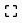

Copy Linked Views and Sheets
The Copy Linked Views and Sheets feature of the Sheet View Manager offers the user a powerful and efficient means to setup a project's views and sheets structure from an existing linked model.
The user can also leverage the ViewSets created in the Sheet View Manager to replicate the existing model's views and documentation structure in their own customized structure with multiple disciplines and view templates predefined.
The Linked Model drop-down allows the user to specify, which linked model they would like to copy views, and sheets from.
The Linked Model Views Grid, displays the available views to copy from the selected linked model. If any filter criteria have been defined, only views matching these criteria will be displayed.
The Sheet Column displays the sheet from the linked model, where the the view has been placed.
The View Type Column displays the Revit System Family of the View. (These are not family types. These are the built in revit system families of the views.)
Currently the only supported ViewFamilies for copying are:
- FloorPlan
- CeilingPlan
- StructuralPlan
The Filter Text Box allows the user to enter text as filtering criteria for the Linked Model Views Grid. Text entered in this box will automatically be used to filter the available views based on the text in the box.
The Show Only Sheet Views checkbox filters the Linked Model Views Grid to display only the views in the linked model that have been placed on sheets.
- The ViewSets list box shows all the ViewSets configured in the Sheet View Manager.
- Selecting ViewSets will create views with the naming and display settings configured in the ViewSet settings.
- When ViewSets are selected each selected view to be copied will be recreated in the host model for each selected ViewSet.
E.G. - If 01 - First Floor Plan is selected and 3 ViewSets are selected, 3 copies of First Floor Plan will be created using the settings from the 3 ViewSets.
The View Naming Convention is a series of drop down boxes and text boxes that allow the user to select parameters and enter custom text delimiters to create a view naming scheme.
The Add Parameter button allows the user to add a Parameter to the View Naming Convention which is used for naming newly created views.
The parameters available for use in the View Naming Convention are shown here to the left:

The Add Custom Text button allows the user to add a Custom Text box to the View Naming Convention. The Custom Text box allows a user to enter any custom text they like for use in naming views. Typically this is used for delimiters between parameters but can be used as needed.
The Views To Create Grid displays the new views to be created. The names are created using the View Naming Convention as explained above.
The Views To Create Grid also displays the Associated Sheet, View Family, Level and View Templates defined in the ViewSets, as well as the ScopeBox if any.
The user can adjust any of the templates and the scope box as desired before view creation.
The Apply Button will clear any views in the Views To Create Grid and then fill the grid with the selected views in the Linked Model Views Grid including any views defined by the selected ViewSets.
The Append Button will leave any views in the Views To Create Grid and add any selected views and any views defined by the selected ViewSets to the Views To Create Grid.
The Delete View button will remove any selected views from the Views To Create Grid.
The Export button will export the views and settings for the Views To Create Grid to an Excel spreadsheet.
This allows the user to quickly and efficiently setup multiple models from a common linked model.
 The Import button will allow the user to import an exported set of views into the Views To Create Grid.
The Import button will allow the user to import an exported set of views into the Views To Create Grid.

The Launch ScopeBox Manager button allows the user to launch the ScopeBox Manager which allows the user to coordinate the host model's ScopeBoxes with those in the Linked Model, without leaving the Copy Linked Views and Sheets window.
The Create Associated Sheets checkbox allows the user to specify whether or not to create sheets in the host model matching those where the views were placed in the linked model.
The TitleBlock drop down allows the user to specify a titleblock for sheet creation where one is not already specified in the ViewSet configuration.
The Viewport Type drop down allows the user to specify the viewport to be used for view placement on sheets when the Place views on associated sheets option is selected.
The Sheet Prefix text box is an automatically enabling and disabling box that allows the user to specify a prefix for sheets when sheet creation option is selected and no prefixes are specified in the ViewSets (if any) being used.
The Place views on associated sheets provides the user the option to place created views on sheets. The placement positioning by default matches the original view position in the linked model. Where no original position exists the view is placed in the center of sheet.
The Clear button clears the Views to Create grid.
The Create button creates the views in the Views to Create grid, along with any associated sheets and places the views on their respective sheets if those options are selected.